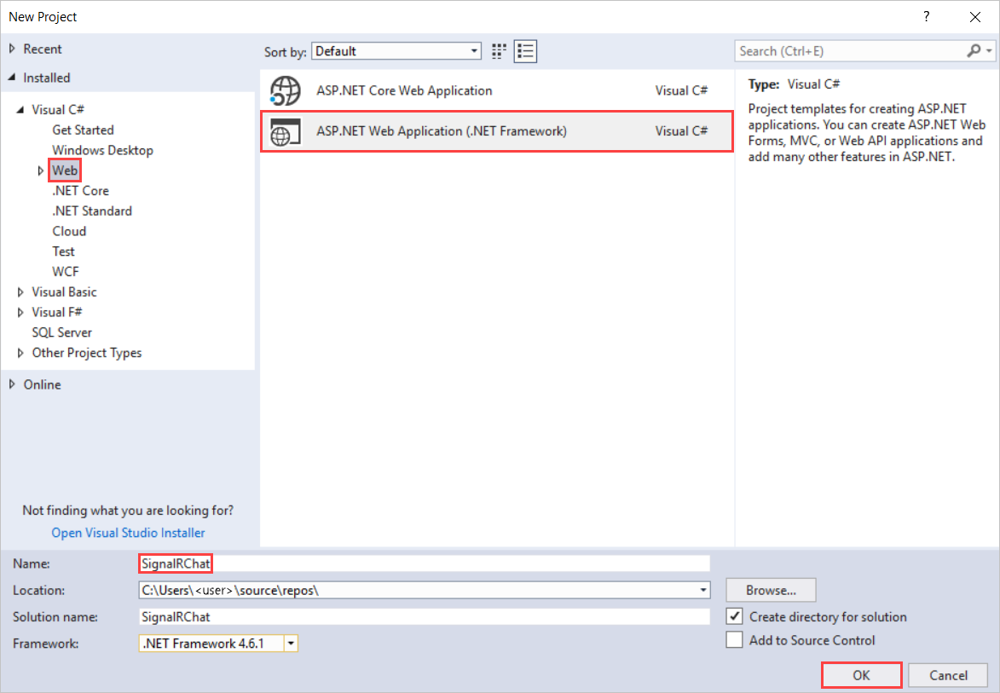
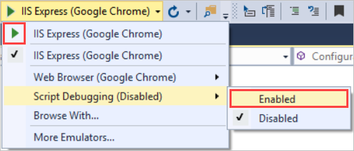
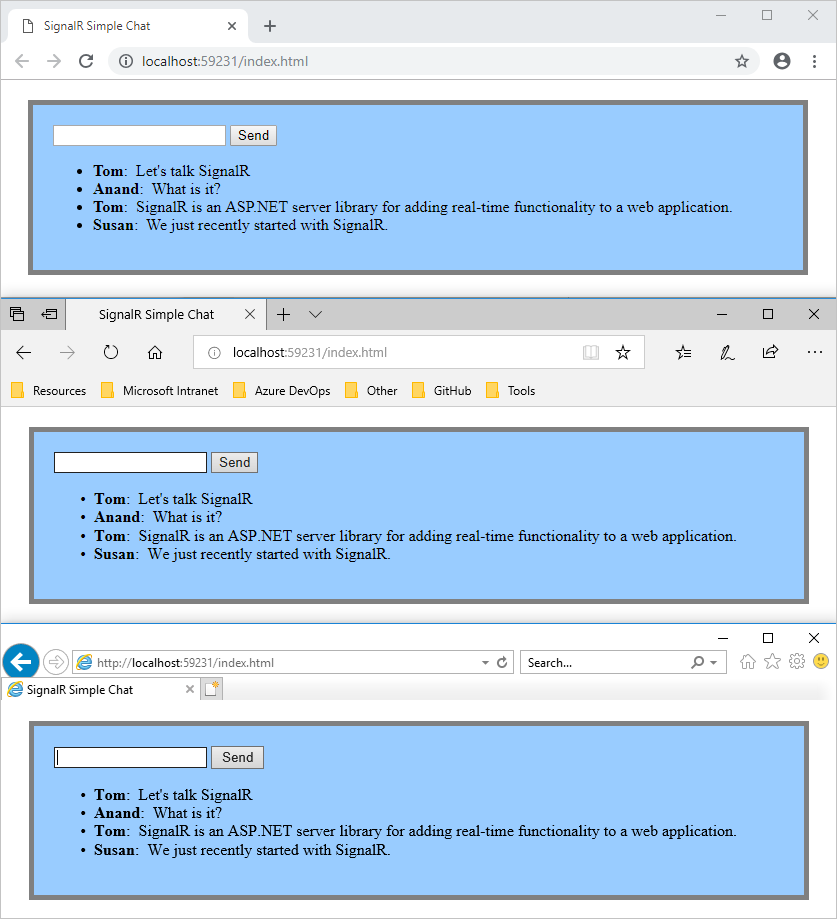
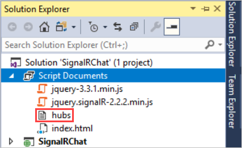

Tutorial: Real-time chat with SignalR 2

This tutorial shows you how to use SignalR to create a real-time chat application. You add SignalR to an empty ASP.NET web application and create an HTML page to send and display messages.
In this tutorial, you:
- Set up the project
- Run the sample
- Examine the code
Warning
This documentation isn't for the latest version of SignalR. Take a look at ASP.NET Core SignalR.
Prerequisites
- Visual Studio 2017 with the ASP.NET and web development workload.
Set up the Project
This section shows how to use Visual Studio 2017 and SignalR 2 to create an empty ASP.NET web application, add SignalR, and create the chat application.
In Visual Studio, create an ASP.NET Web Application.

In the New ASP.NET Project - SignalRChat window, leave Empty selected and select OK.
In Solution Explorer, right-click the project and select Add > New Item.
In Add New Item - SignalRChat, select Installed > Visual C# > Web > SignalR and then select SignalR Hub Class (v2).
Name the class ChatHub and add it to the project.
This step creates the ChatHub.cs class file and adds a set of script files and assembly references that support SignalR to the project.
Replace the code in the new ChatHub.cs class file with this code:
C#using System; using System.Web; using Microsoft.AspNet.SignalR; namespace SignalRChat { public class ChatHub : Hub { public void Send(string name, string message) { // Call the broadcastMessage method to update clients. Clients.All.broadcastMessage(name, message); } } }In Solution Explorer, right-click the project and select Add > New Item.
In Add New Item - SignalRChat select Installed > Visual C# > Web and then select OWIN Startup Class.
Name the class Startup and add it to the project.
Replace the default code in Startup class with this code:
C#using Microsoft.Owin; using Owin; [assembly: OwinStartup(typeof(SignalRChat.Startup))] namespace SignalRChat { public class Startup { public void Configuration(IAppBuilder app) { // Any connection or hub wire up and configuration should go here app.MapSignalR(); } } }In Solution Explorer, right-click the project and select Add > HTML Page.
Name the new page index and select OK.
In Solution Explorer, right-click the HTML page you created and select Set as Start Page.
Replace the default code in the HTML page with this code:
HTML<!DOCTYPE html> <html> <head> <title>SignalR Simple Chat</title> <style type="text/css"> .container { background-color: #99CCFF; border: thick solid #808080; padding: 20px; margin: 20px; } </style> </head> <body> <div class="container"> <input type="text" id="message" /> <input type="button" id="sendmessage" value="Send" /> <input type="hidden" id="displayname" /> <ul id="discussion"> </ul> </div> <!--Script references. --> <!--Reference the jQuery library. --> <script src="Scripts/jquery-3.1.1.min.js" ></script> <!--Reference the SignalR library. --> <script src="Scripts/jquery.signalR-2.2.1.min.js"></script> <!--Reference the autogenerated SignalR hub script. --> <script src="signalr/hubs"></script> <!--Add script to update the page and send messages.--> <script type="text/javascript"> $(function () { // Declare a proxy to reference the hub. var chat = $.connection.chatHub; // Create a function that the hub can call to broadcast messages. chat.client.broadcastMessage = function (name, message) { // Html encode display name and message. var encodedName = $('<div />').text(name).html(); var encodedMsg = $('<div />').text(message).html(); // Add the message to the page. $('#discussion').append('<li><strong>' + encodedName + '</strong>: ' + encodedMsg + '</li>'); }; // Get the user name and store it to prepend to messages. $('#displayname').val(prompt('Enter your name:', '')); // Set initial focus to message input box. $('#message').focus(); // Start the connection. $.connection.hub.start().done(function () { $('#sendmessage').click(function () { // Call the Send method on the hub. chat.server.send($('#displayname').val(), $('#message').val()); // Clear text box and reset focus for next comment. $('#message').val('').focus(); }); }); }); </script> </body> </html>In Solution Explorer, expand Scripts.
Script libraries for jQuery and SignalR are visible in the project.
Important
The package manager may have installed a later version of the SignalR scripts.
Check that the script references in the code block correspond to the versions of the script files in the project.
Script references from the original code block:
HTML<!--Script references. --> <!--Reference the jQuery library. --> <script src="Scripts/jquery-3.1.1.min.js" ></script> <!--Reference the SignalR library. --> <script src="Scripts/jquery.signalR-2.2.1.min.js"></script>If they don't match, update the .html file.
From the menu bar, select File > Save All.
Run the Sample
In the toolbar, turn on Script Debugging and then select the play button to run the sample in Debug mode.

When the browser opens, enter a name for your chat identity.
Copy the URL from the browser, open two other browsers, and paste the URLs into the address bars.
In each browser, enter a unique name.
Now, add a comment and select Send. Repeat that in the other browsers. The comments appear in real-time.
Note
This simple chat application does not maintain the discussion context on the server. The hub broadcasts comments to all current users. Users who join the chat later will see messages added from the time they join.
See how the chat application runs in three different browsers. When Tom, Anand, and Susan send messages, all browsers update in real time:

In Solution Explorer, inspect the Script Documents node for the running application. There's a script file named hubs that the SignalR library generates at runtime. This file manages the communication between jQuery script and server-side code.

Examine the Code
The SignalRChat application demonstrates two basic SignalR development tasks. It shows you how to create a hub. The server uses that hub as the main coordination object. The hub uses the SignalR jQuery library to send and receive messages.
SignalR Hubs in the ChatHub.cs
In the code sample above, the ChatHub class derives from the Microsoft.AspNet.SignalR.Hub class. Deriving from the Hub class is a useful way to build a SignalR application. You can create public methods on your hub class and then use those methods by calling them from scripts in a web page.
In the chat code, clients call the ChatHub.Send method to send a new message. The hub then sends the message to all clients by calling Clients.All.broadcastMessage.
The Send method demonstrates several hub concepts:
Declare public methods on a hub so that clients can call them.
Use the
Microsoft.AspNet.SignalR.Hub.Clientsdynamic property to communicate with all clients connected to this hub.Call a function on the client (like the
broadcastMessagefunction) to update clients.C#public class ChatHub : Hub { public void Send(string name, string message) { // Call the broadcastMessage method to update clients. Clients.All.broadcastMessage(name, message); } }
SignalR and jQuery in the index.html
The index.html page in the code sample shows how to use the SignalR jQuery library to communicate with a SignalR hub. The code carries out many important tasks. It declares a proxy to reference the hub, declares a function that the server can call to push content to clients, and it starts a connection to send messages to the hub.
var chat = $.connection.chatHub;
Note
In JavaScript the reference to the server class and its members has to be camelCase. The code sample references the C# ChatHub class in JavaScript as chatHub.
In this code block, you create a callback function in the script.
chat.client.broadcastMessage = function (name, message) {
// Html encode display name and message.
var encodedName = $('<div />').text(name).html();
var encodedMsg = $('<div />').text(message).html();
// Add the message to the page.
$('#discussion').append('<li><strong>' + encodedName
+ '</strong>: ' + encodedMsg + '</li>');
};
The hub class on the server calls this function to push content updates to each client. The two lines that HTML-encode the content before displaying it are optional and show a good way to prevent script injection.
This code opens a connection with the hub.
$.connection.hub.start().done(function () {
$('#sendmessage').click(function () {
// Call the Send method on the hub.
chat.server.send($('#displayname').val(), $('#message').val());
// Clear text box and reset focus for next comment.
$('#message').val('').focus();
});
});
Note
This approach ensures that the code establishes a connection before the event handler executes.
The code starts the connection and then passes it a function to handle the click event on the Send button in the HTML page.
Get the code
Additional resources
For more about SignalR, see the following resources:
Next steps
In this tutorial you:
- Set up the project
- Ran the sample
- Examined the code
Advance to the next article to learn how to use SignalR and MVC 5.